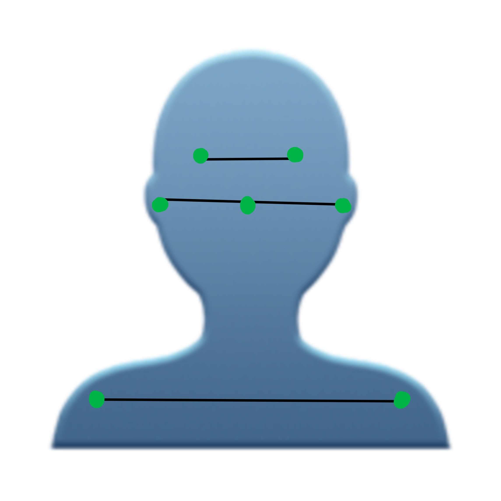

Для того чтобы сидеть прямо достаточно:
Деражть глаза на одном уровне
Держать плечи на одном уровне
И держать нос между ушей
Компьютер будет предупреждать вас когда какой-то из пунктов не выполняется.
Окей, я готов